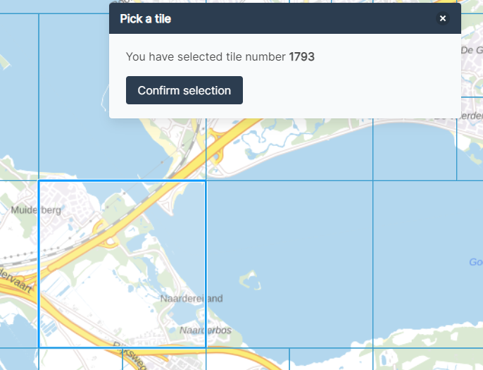
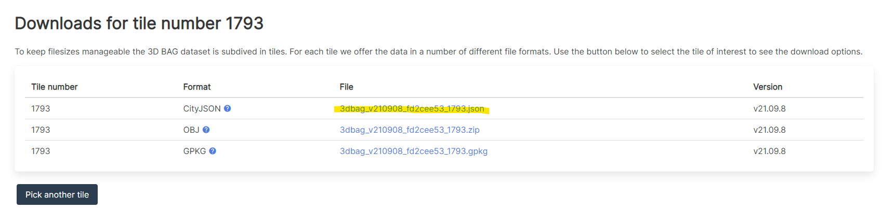
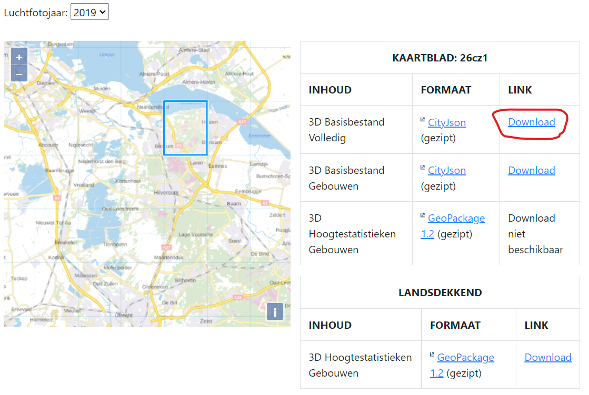
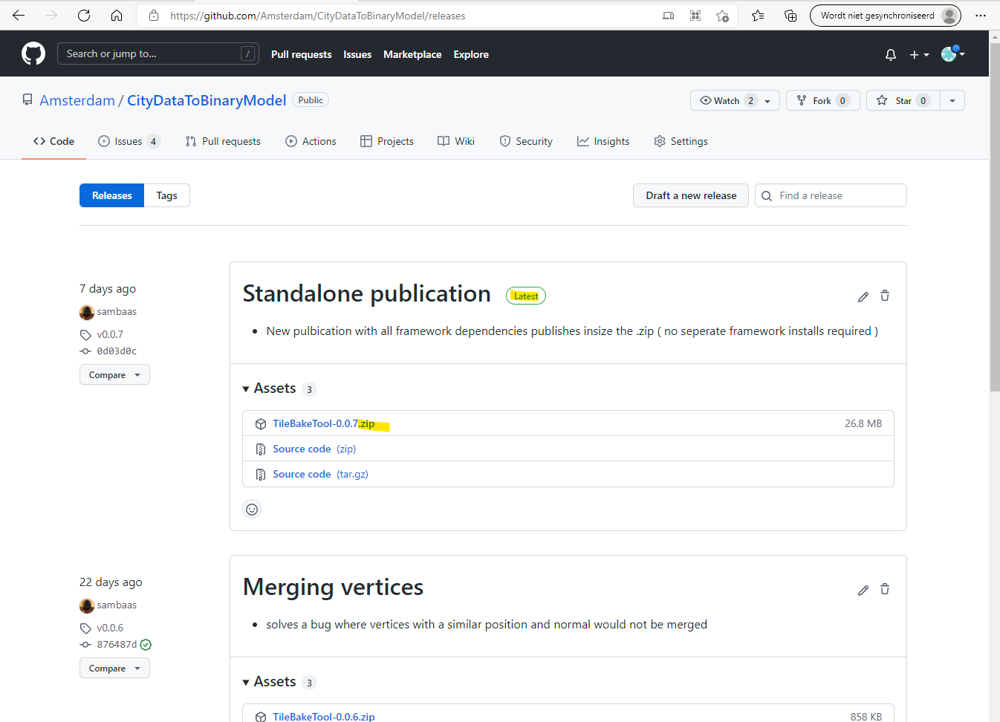
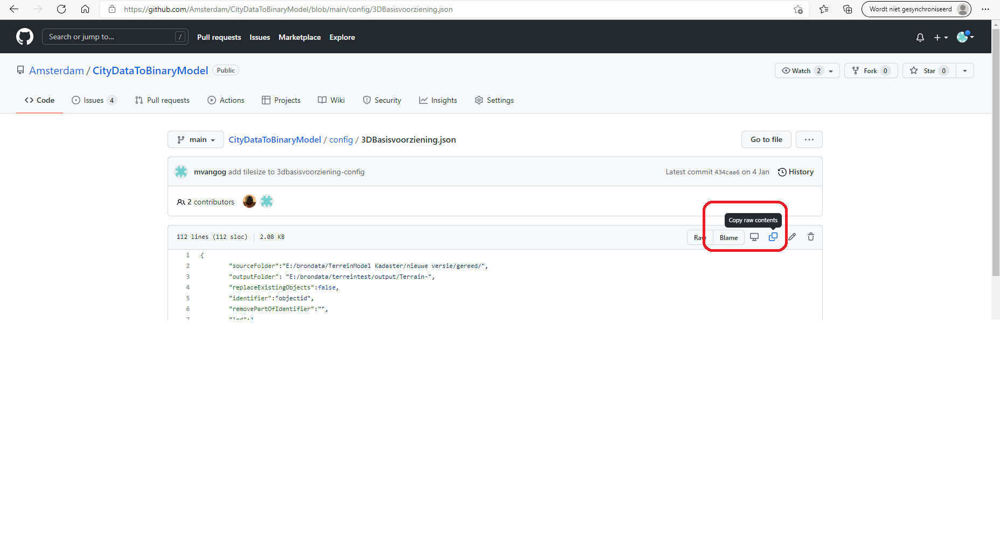
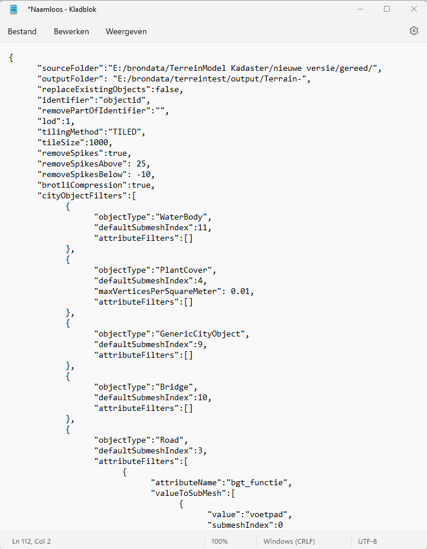
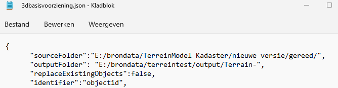
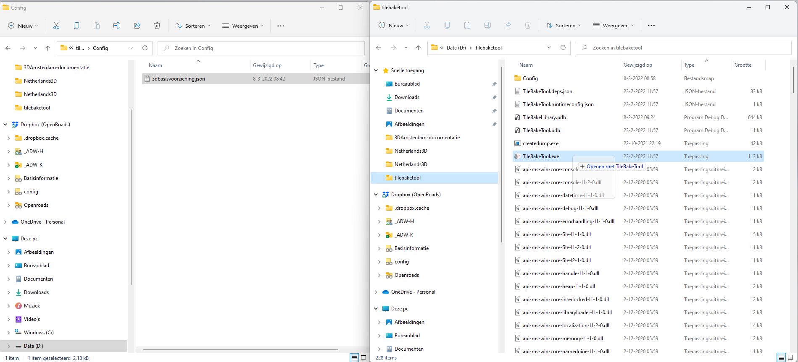
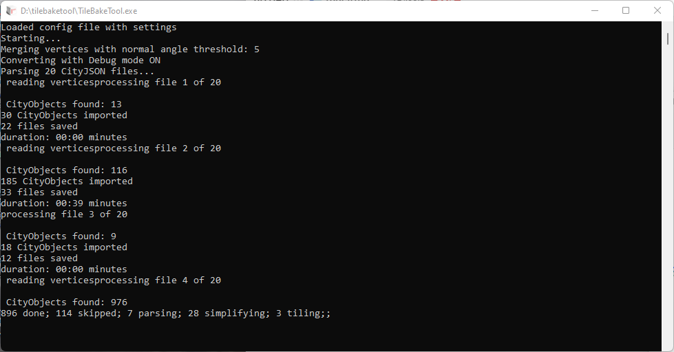
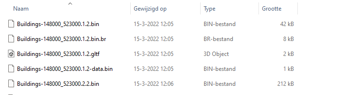

Data Klaarzetten
In de vorige handleiding hebben we een unity-project gemaakt waarin we Amsterdam in 3D zien. Hartstikke leuk, maar wat moet je doen om een ander gebied te kunnen zien.
In deze handleiding gaan we 3D-modellen van gebouwen en terrein bemachtigen en deze voorbereiden voor gebruik in Unity.
In de volgende handleiding gaan we het Unity-project zodanig aanpassen dat we dit nieuwe 3D-model kunnen laten zien.
Gebouwendata downloaden
De TU Delft heeft voor heel nederland 3D-modellen van (bijna) alle gebouwen in nederland gegenereerd. Deze modellen kunnen we downloaden en gebruiken.
Ga hiervoor naar 3dbag.nl en zoek het knopje "Downloads" Op deze pagina kun je een tegel selecteren en vervolgens op "Confirm Selection" klikken.

Op de pagina die vervolgens download je de tegel in cityJSON formaat door op het bestand onder de kop File te klikken. Let op dat je het bestand kiest dat eindigt op ".json"

Vervolgens klik je op "Pick Another Tile" totdat je alle tegels binnen het gebied dat je wilt hebben gehad hebt.
Alle gedownloade bestanden staan nu waarschijnlijk in de downloads-folder. Het is aan te raden deze bestanden te verplaatsen naar een nieuwe map.
Terreindata downloaden
Het kadaster heeft voor heel Nederland een terreinmodel gegenereerd op basis van de BGT en luchtfotos en deze beschikbaar gesteld op https://3d.kadaster.nl/basisvoorziening-3d/
Eenmaal per jaar wordt er een nieuwe versie gemaakt.
In de dataset van luchtfotojaar 2020 zit een probleem waardoor de watervlakken deels ontbreken, wij raden op dit moment aan luchtfotojaar 2019 te gebruiken.
Selecteer hier een tegel die je wilt hebben en klik op de download-link achter 3D Basisbestand Volledig.

Herhaal dit voor alle tegels binnen het gebied waarin je geïnteresseerd bent.
De bestanden die gedownload worden zijn gezipt, dus pak ze uit en plaats alle resulterende .json-bestanden in een aparte map (als het goed is 4 stuks per tegel en een txt bestand).
Het omzetten voorbereiden
Om de data van de 3dBag en de 3DBasisvoorziening soepel te kunne gebruiken in unity hebben wij een conversietool gemaakt.
Om deze tool te downloaden ga je naar https://github.com/Amsterdam/CityDataToBinaryModel/releases
Op deze pagina staan alle versies van de tool die ooit gereleased zijn. De bovenste in de lijst heeft altijd het icoontje "Latest", deze willen we downloaden. Dit doen we door onder het kopje "Assets" op het zip-bestand te klikken.

Pak het zip-bestandje uit naar een map die je makkelijk terug kunt vinden.
Er staan een heleboel bestanden in deze nieuwe map, maar laat je daar niet door intimideren. Het enige bestand in deze map die voor het gebruik belangrijk is, is TileBakeTool.exe
Om de TilebakeTool te vertellen wat deze precies moet doen hebben we een instellingenbestandje nodig.
Voor de 3DBag en 3DBasisvoorziening hebben we deze al voorbereid voor je.
Ga naar https://github.com/Amsterdam/CityDataToBinaryModel/tree/main/config
Klik op 3Dbasisvoorzieing.json. gihub laat nu de inhoud van dit bestandje zien.

Klik nu bovenin op "copy raw contents", open windows kladblok en plak de inhoud met ctrl+v.

Vervolgens slaan we dit bestand op onder de naam 3DBasisvoorziening.json
Doe hetzelfde voor de bestanden "panden TUDelftLod1-2.json" en "panden TUDelftLod2-2.json"
Datasets omzetten
Om de tilebaketool aan het werk te kunnen zetten hoeven we deze alleen nog maar te vertellen waar de bronbestanden staan en waar de resultaten geplaatst moeten worden. Dit doen wij in het instellingenbestand.

"sourceFolder" verwijst naar de map waarin de gedownloade en uitgepakte bestanden met de terreindata staan. Let erop dat hier een "/" achter de mapnaam geplaatst moet worden.
"outputFolder" verwijst naar de map waarin de resultaten geplaatst moeten worden, aangevuld met een stuk tekst waarmee de naam van de nieuwe bestanden moet beginnen. In het bovenstaande voorbeeld wordt de output dus geplaatst in de map 'brondata/terreintest/output' op de E-schijf, en alle bestandsnamen in de output beginnen met het voorvoegsel "Terrein-".
LET OP: 3D-Bassisvoorziening heeft voor de 2019 en de 2020 versies verschillende LOD-niveau benamingen.
Voor de 2019-versie moet in het instellingen-bestand bij "lod :" 1.0 ingevuld worden, voor de 2020-versie moet dit 1.2 zijn.
Wanneer we nu deze instellingen aangepast en opgeslagen hebben kunnen we de tilebaketool aan het werk zetten. Dit doen we op de volgende manier:
Open de windows verkenner 2 keer en plaats deze naast elkaar in het scherm. In de ene verkenner open je de map met het instellingenbestand en in de andere verkenner open je de map met de tilebaketool.
Vervolgens klik je op het instellingenbestand, sleep je deze op tilebaketool.exe in de andere verkenner en laat hem los.

Op dit moment opent er een venster met een zwarte achtergrond, dit is de tilebaketool die vertelt wat hij op dit moment doet.

Wanneer de Tilebaketool klaar is (voor het maaiveld kan dit enkele uren duren) zijn er in de outputfolder en heleboel bestanden gemaakt.
Voor elke vierante kilometer zijn 5 bestanden gegenereerd:

Het bestand dat eindigt op .bin bevat de geometrie.
Het bestand dat eindigt op .bin.br bevat de geometrie, en is gecomprimeerd. Deze bestanden worden gebruikt als de 3D-viewer in een webbrowser draait.
Het bestand dat eindigt op -data.bin bevat data waaruit we kunnen herleiden welke stukjes geometrie bij een uniek object-id horen (bijvoorbeeld een bag-id)
Het bestand dat eindigt op .gltf zorgt er voor dat je de geometrie in het .bin-bestand kan openen in paint3D of andere software die gltf-bestanden kan openen.
Als bovenstaande allemaal is gelukt kan je de eigen data in Unity gaan koppelen, volg hiervoor de handleiding DataKoppelen.md